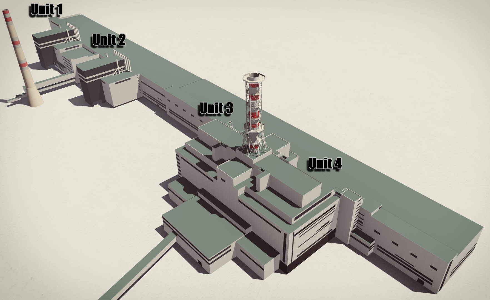

The Chernobyl nuclear power plant is a decommissioned nuclear plant. It
is located in Ukraine, about 100-110 Km north of Kyiv. It is located
near the abandoned city of Pripyat, about 16 Km from the city of
Chernobyl as well as another 16Km from the Belarus-Ukraine border.
The RMBK (which, in Russian, is Reaktor Bolshoy Moshchnost Kanalny, or
high-power channel reactor) is a class of water-cooled Soviet-designed
nuclear power reactors that use graphite moderators.